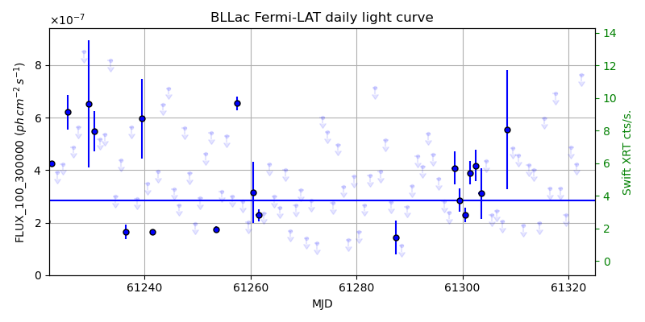
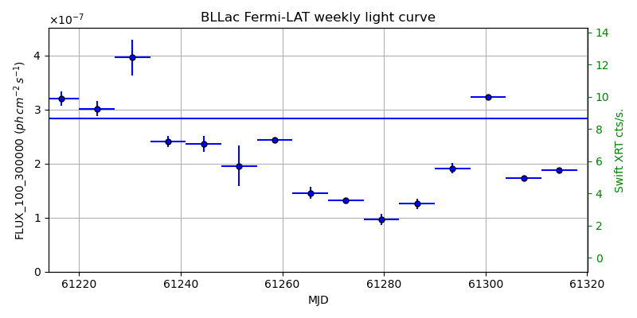
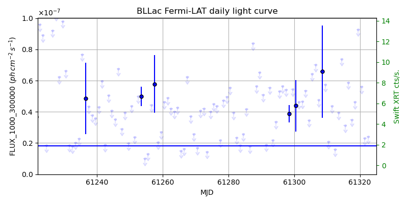
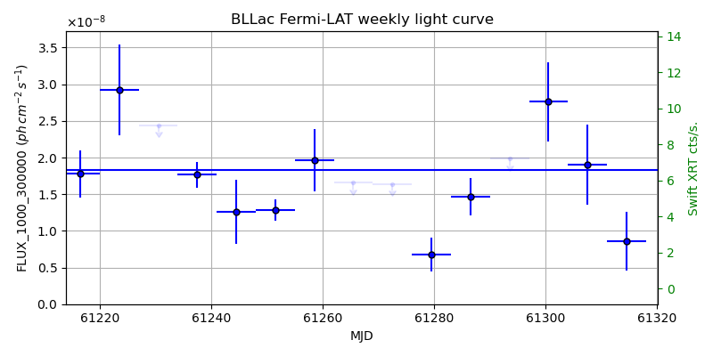

LAT Lightcurve site: https://fermi.gsfc.nasa.gov/ssc/data/access/lat/msl_lc/source/BL_Lac
Swift site: https://www.swift.psu.edu/monitoring/source.php?source=BLLacertae
NED: Query
Time of last update of this page: UT: 2026-10-10 15:29 (MJD: 61323.646)
| Property | Value |
|---|---|
| R.A. | 22:02:43.20 |
| Dec. | 42:16:40.8 |
| z | 0.067 |
| 3FGL SpectrumType | LogParabola |
| 3FGL PL Index | |
| 3FGL Flux_100_300000 | 2.84e-07 1 / (s cm2) |
| 3FGL Flux_1000_300000 | 1.83e-08 1 / (s cm2) |
| 3FGL Flux >200 GeV | 1.47e-11 1 / (s cm2) |
| 3FGL Extrap. Crab >200 GeV | 0.06 |
| 3FGL Flux After EBL Absorption >200GeV | 1.16e-11 1 / (s cm2) |
| 3FGL EBL Crab Fraction >200GeV | 0.05 |

| MJD | dMJD | Flux | dFlux | Frac3FGL | FracCrab>200GeV | EBLFracCrab>200GeV |
|---|---|---|---|---|---|---|
| 61318.50 | 0.50 | 3.29e-07 | 0.00e+00 | 0.00 | 0.00 | 0.00 |
| 61319.50 | 0.50 | 2.28e-07 | 0.00e+00 | 0.00 | 0.00 | 0.00 |
| 61320.50 | 0.50 | 4.86e-07 | 0.00e+00 | 0.00 | 0.00 | 0.00 |
| 61321.50 | 0.50 | 4.23e-07 | 0.00e+00 | 0.00 | 0.00 | 0.00 |
| 61322.50 | 0.50 | 7.62e-07 | 0.00e+00 | 0.00 | 0.00 | 0.00 |

| MJD | dMJD | Flux | dFlux | Frac3FGL | FracCrab>200GeV | EBLFracCrab>200GeV |
|---|---|---|---|---|---|---|
| 61286.50 | 3.50 | 1.25e-07 | 9.89e-09 | 0.44 | 0.03 | 0.02 |
| 61293.50 | 3.50 | 1.92e-07 | 9.15e-09 | 0.68 | 0.04 | 0.03 |
| 61300.50 | 3.50 | 3.23e-07 | 2.14e-09 | 1.14 | 0.07 | 0.06 |
| 61307.50 | 3.50 | 1.73e-07 | 2.58e-09 | 0.61 | 0.04 | 0.03 |
| 61314.50 | 3.50 | 1.88e-07 | 2.86e-09 | 0.66 | 0.04 | 0.03 |

| MJD | dMJD | Flux | dFlux | Frac3FGL | FracCrab>200GeV | EBLFracCrab>200GeV |
|---|---|---|---|---|---|---|
| 61318.50 | 0.50 | 4.63e-08 | 0.00e+00 | 0.00 | 0.00 | 0.00 |
| 61319.50 | 0.50 | 9.28e-08 | 0.00e+00 | 0.00 | 0.00 | 0.00 |
| 61320.50 | 0.50 | 5.61e-08 | 0.00e+00 | 0.00 | 0.00 | 0.00 |
| 61321.50 | 0.50 | 2.30e-08 | 0.00e+00 | 0.00 | 0.00 | 0.00 |
| 61322.50 | 0.50 | 2.40e-08 | 0.00e+00 | 0.00 | 0.00 | 0.00 |

| MJD | dMJD | Flux | dFlux | Frac3FGL | FracCrab>200GeV | EBLFracCrab>200GeV |
|---|---|---|---|---|---|---|
| 61286.50 | 3.50 | 1.47e-08 | 2.52e-09 | 0.80 | 0.05 | 0.04 |
| 61293.50 | 3.50 | 1.99e-08 | 0.00e+00 | 0.00 | 0.00 | 0.00 |
| 61300.50 | 3.50 | 2.76e-08 | 5.41e-09 | 1.51 | 0.09 | 0.07 |
| 61307.50 | 3.50 | 1.90e-08 | 5.50e-09 | 1.04 | 0.06 | 0.05 |
| 61314.50 | 3.50 | 8.56e-09 | 3.99e-09 | 0.47 | 0.03 | 0.02 |
--------------------------------------------------------- Using user-supplied coords: 22:02:43.20 42:16:40.8 2000 --------------------------------------------------------- FLWO UT night of: 2026-10-11 Local Sid. @ Midnight: 00:55 Sunset (-15.0) (local, UT): 19:04 02:04 Sunrise (-15.0) (local, UT): 05:18 12:18 Moonrise (local, UT): Moonset (local, UT): Moon phase: 0.01 --------------------------------------------------------- AzTime LSID UT Obj_el Obj_az Mn_el Mn_az Sep. --------------------------------------------------------- 19:04 19:58 02:04 63.1 57.6 -16.1 264.2 129.5 19:34 20:29 02:34 68.4 53.6 -22.3 267.8 129.4 20:04 20:59 03:04 73.3 45.6 -28.5 271.5 129.3 20:34 21:29 03:34 77.3 30.2 -34.7 275.4 129.1 21:04 21:59 04:04 79.2 4.5 -40.8 279.7 129.0 21:34 22:29 04:34 78.1 336.5 -46.8 284.6 128.8 22:04 22:59 05:04 74.6 318.1 -52.7 290.5 128.6 22:34 23:29 05:34 69.9 308.3 -58.4 297.7 128.5 23:04 23:59 06:04 64.7 303.3 -63.6 307.3 128.3 23:34 00:29 06:34 59.3 300.9 -68.1 320.3 128.1 00:04 00:59 07:04 53.7 299.9 -71.3 338.2 128.0 00:34 01:29 07:34 48.2 299.9 -72.6 0.4 127.8 01:04 01:59 08:04 42.7 300.6 -71.5 22.7 127.6 01:34 02:30 08:34 37.2 301.8 -68.3 40.8 127.4 02:04 03:00 09:04 31.8 303.4 -63.9 54.1 127.3 02:34 03:30 09:34 26.5 305.3 -58.7 63.8 127.1 03:04 04:00 10:04 21.4 307.6 -53.1 71.2 126.9 03:34 04:30 10:34 16.4 310.2 -47.3 77.2 126.8 04:04 05:00 11:04 11.6 313.1 -41.4 82.2 126.6 04:34 05:30 11:34 7.1 316.3 -35.3 86.6 126.5 05:04 06:00 12:04 3.0 319.8 -29.2 90.6 126.4 05:18 06:14 12:18 1.3 321.5 -26.5 92.4 126.3 --------------------------------------------------------- Dark hours >55 deg.: 4.89 srcstart (UT): 2026-10-11 02:04 srcend (UT): 2026-10-11 06:57